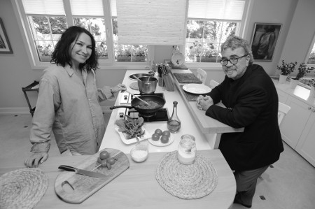

“Pilav delisiyim”
Demet Hanım, klasik soruyla başlıyorum; yemekle aranız nasıl?
Çok severim; yemesini de mutfağa girmesini de. Kardeşim Sedef kadar profesyonel olmasam da arkadaşlarım elimin lezzetli olduğunu söylerler. Sevdiğim yemeği güzel yaparım. Türk mutfağına daha yakınım; belki de aileden, babaanneden gelen gelenekle diyeyim. Babaannem muhteşem bir aşçıydı, çok güzel yemek yapardı. Ailenin bütün hanımları, gelinleri onun elini almıştır. Halam, annem, amcamın karısı, herkes babaannem usulü yemek pişirir, o öğretmiştir bütün kızlarına ve gelinlerine.
Çocukluğunuzda en sevdiğiniz yemek neydi?
Babaannemin yaptığı karnıyarık ve domatesli pilavı, anneannemin yaptığı minik ızgara köfteleri, yazın soslu patlıcan kızartmasını çok severdim, hâlâ da seviyorum. Ben pirinç delisiyim, pilavı çok seviyorum, her türlüsünü yerim.
Anılarınızdaki mutfakta gözünüzün önüne neler geliyor?
Bakır tencereler geliyor gözümün önüne. Babaannem bakır tencereden başka bir şeyde yemek yapmazdı. Onların kalaylandığı dönemi hatırlıyorum. Eskiden kalaycılar geçerdi sokaktan. Bizim de bildik bir kalaycımız vardı, o gelirdi. Babaannemin tencereleri, küçükten büyüğe kadar kalaylanırdı. Bakır tencerelerde pişen zeytinyağlı dolmaya ve pilava doyum olmazdı. Mesela, zeytinyağlı dolmayı şöyle hatırlarım: Babaannem zeytinyağlı dolmanın içini yapar hafif, diri bırakır, oradan kaşık kaşır biberleri doldurur ve başka tencereye yerleştirirdi. İçin bulunduğu tencerenin dibini sıyırırdık biz. Ben onu çok severdim. Yani hafif dirimsi zeytinyağlı dolma içi için, “Babaanne n’olur hepsini koyma” diye yalvarırdım. “Evladım, iç yetmeyecek” derdi. Biz yine de tencereden çalardık.
Yemek seçen bir çocuk muydunuz?
Hiç seçmedim. Şimdiki çocuklar gibi sadece köfte, patates ve makarnayla beslenmedik biz. Biz de öyle sebze yemeyen çocuklar değildik. Ama annem daha iyi hatırlar; belki çok küçükken kerevizdi, pırasaydı yemiyordum ama hiçbir zaman yemek sorunum olmadı. Tatlıyı sevmedim, tatlı düşkünlüğüm yok, tuzcuyum. Etle de çok fazla aram yok. hamur işinde de tuzlu şeyler seviyorum.
Hamur işi diyorsunuz ama manken gibisiniz.
Yok o kadar da değil, idare ediyorum. Bu da aileden, maddi değil de manevi kalan en güzel miras, genetik miras. Baba tarafım uzun ve fittir. Ne kadar kilo alsak da temelde böyle sağlam bir duruşumuz var. Çalışma hayatı, mesleğimin getirdiği koşuşturma, tatlıya çok düşkün olmamam... biraz da dikkat ediyorum tabii ki. Yemek yemeyi sevdiğim için, bir davete gittiğimde ya da seyahatteyken “Ben diyetteyim” demeyi hiç sevmiyorum. Sizi ağırlayan insanda da tatsız bir durum yaratıyor. O yüzden her şeyin tadına bakıp dozunu kaçırmadan yiyorum. Evde olduğum zaman, herhangi bir program yoksa, bir sosyalleşme söz konusu değilse, biraz daha sebze ağırlıklı besleniyorum, o geceyi pas geçiyorum. Kendime göre uyguladığım bir diyet programım var, ama asla aşırıya kaçmıyorum. Mesela, çok toksam yemekten hemen sonra meyve yemem. Yıllardır –biraz da kadınların makûs talihi– metabolizmamın yavaş çalışması nedeniyle kendimi çok su içmeye alıştırdım. Gün içinde 2,5 litre su içmeye çalışıyorum. Ayrıca bol bol yeşil çay içiyorum. Spor da yapıyorum, ama mesleğim gereği bu pek düzenli olmuyor. Ama ben bunu dengeliyorum. Yazın oğlumu alıp Çeşme Alaçatı’daki minik yazlığımıza gidiyoruz. Kışın yaptığım yoğun programı orada hafif uyguluyorum. Basit hareketler yapıyorum, bol bol yüzüyorum. Kendi reçetemi kendim yapıyorum. Tabii ki diyetisyenler emekli olsunlar demiyorum, onlar işine devam etsinler. Zaten obeziteye karşı açtıkları savaşta onların işleri çok yoğun.
Çocukluğunuzda evinizde en çok hangi yemek pişerdi?
Vallahi bütün sebze yemekleri; kıymalı fasulyeden tutun da talaş böreğine kadar. Biz mükemmel bir aşçının yanında büyüdük. Dedemi kaybettikten sonra babaannem bizimle birlikte yaşadı, mutfaktan da o sorumluydu. Annem hiç mutfağa girmedi. Hatta annem, “Kayınvalidem sayesinde evliliğimin on dört yılından sonra zeytinyağlı dolma pişirdim” diyor. Boza bile yapılırdı bizim evimizde; öylesine usta bir aşçıydı babaannem. Çocukluğumda uykuluk, keşkek pişerdi. Hiç unutmuyorum, eski küçük evimizde Alaaddin marka bir sobamız vardı. Babaannemin sobasıydı, onun köşesinde dururdu. Babaannem o sobanın üstüne sabah koyduğu keşkeği, akşama kadar karıştırarak pişirirdi.
Türk mutfağından sonra hangi ülke mutfağını seversiniz?
İtalyan ve Çin mutfaklarını seviyorum, çünkü ikisini de Türk mutfağına çok yakın buluyorum. Çin mutfağındaki tatlı-ekşi soslar farklı gelebilir, ama benim favorimdir bunlar. Sebzeli pilavı, noodle’u, yeşil biberli dana etini çok severim. Sebzeyi diri sevdiğim için Çin usulü pişmiş sebzeler çok hoşuma gider.
Yöre yemekleriyle aranız nasıl?
Antakya ve İskenderun’da muhteşem yemekler yapılıyor. Kebap kültürüne pek yatkın değilim. Acıyı çok seviyorum, ama mide problemim yüzünden pek yiyemiyorum. Bizim evimizde baharat çok kullanılır. Akdeniz mutfağı favorim. Kocamın da damak zevki çok gelişmiştir, çok iyi yemek pişirir ve lezzetten anlar. Bir davet vereceksek et ve balığı mutlaka eşim yapar. Ancak fırında farklı bir yemek, soslu bir et yapılacaksa ben mutfağa girerim. Kocamın çok yaratıcı makarna sosları vardır. Hele sebzeli makarnası dillere destandır.
Eşinizin güzel yaptığı yemekleri saydınız; siz neyi güzel yaparsınız?
Efendim, salatada çok iddialıyımdır. Maydanoz salatasını çok seviyorum.
Tarifini alabilir miyim?
Bir kaba yarım su bardağı ince bulguru koyuyorum. Üstüne kaynar su ilave edip beş dakika bekletiyorum. Ceviz içini, çok toz olmayacak şekilde dövüyorum. Maydanozun üzerine zeytinyağı, limon, nar ekşisi, biraz balzamik sirke daha sonra da ceviz ve ince bulguru döküp iyice karıştırıyorum. Cevizi her salatada çok severim. Hani kebapçılarda gâvurdağı salatası gelir ya ona bayılırım; bol cevizli, nar ekşili... Makarnayı güzel yaparım. Fırında bonfilem ve tavuk kanadı sosum dillere destandır, zeytinyağlılarım da güzeldir. Mevsimiyse ve ayıklanmışsa enginar evimizde her gün pişer. Bezelyeyi hiç sevmem. Bezelyeyi sevmediğimi yeni keşfettim. Ali’ye hamileyken de etli biber dolması yiyemedim, hâlâ da bayılmıyorum. Çok karışık yemek sevmem. Mesela, balık köftesine bir türlü alışamadım. Niye balıktan köfte yapılır ki? Bayat balıktan yapılmış hissi uyandırır bende. Izgara balığı severim; yani bildiğimiz şeylere farklı havalar katmayı sevmem. Et varsa adam gibi bonfile et gelecek ortaya. İçinde şu varmış, yok kurbağa bacağında bekletilmiş, yok şu sosun içinde bekletilmiş; bunlar bana göre değil. Bizim baharatların dışındaki baharatları da pek tanımıyorum. Ama hiç kimseyi üzmem, tadarım. Mesela Hint mutfağı, Meksika mutfağı da bana çok sıcak gelmiyor; köri kokusuna hiç tahammül edemem.
Ne tür restoranlara gidersiniz?
Bizim balıkçılarımız meşhurdur. Bir de dışarı çıkıp yemek yiyeceksem, etrafı seyretmeye değil, gerçekten iyi yemek yemeye giderim, çünkü ben en iyi yemeğin yine evimde piştiğine inanıyorum. Bir lokantaya gideceksem, kız kardeşim Sedef’e telefon edip önce ustasını soruyorum. Evimde mutluyum. Ben de, kocam da güzel yemek yapıyoruz. Çok iyi yemek yapan arkadaşlarımızın, kardeşimin evinde lezzetli yemekler yiyoruz. Sedef’in evinde yediğimden daha lezzetsiz olan bir yemeğe gidip niye para vereyim ki?
En sevdiğiniz öğün?
Sabah kahvaltısı. Simit, çay ve kaşarlı tostu sabah, öğle, akşam yerim.
Bir günlük yemek maceranız?
Sabahları en sevdiğim şey, kızarmış ekmek kokusudur. Taze ekmekle kahvaltı yapmayı hiç sevmem. Bir başkasının evindeysem, nazım geçiyorsa ekmeği mutlaka kızarttırırım. O kokuyu seviyorum, bana sabahı hatırlatıyor. Mutlaka domates, birkaç yeşil zeytin, ceviz ve keçi peyniri yerim. Öğlen yemeğini maalesef bütün spor hocalarının, diyetisyenlerin önerilerine rağmen atlıyorum, çünkü acıkmıyorum. Fakat en ufak arada, salata yiyorum. Kışın çorbanın her türlüsünü tüketirim. Öğlenleri et, tavuk, balık yemeyi sevmem. Bazen doyurucu olsun diye belki tavuklu salata atıştırırım. Akşam tipik bir Türk ailesi gibiyiz. Evin beyi gelip masaya oturduğu için o günün taze yemeği akşam yenir, biz öyle yetiştik. Vaktim kocamın yemek hayallerinin peşinde koşmakla geçiyor, çünkü Zafer hayal ettiği şeyi yemeyi seviyor. Sabah çıkarken akşam ne yiyeceğini hayal edip söylememişse, ben bamya pişiriyorum, sofraya oturduğumuzda, “Keşke güzel bir balık olsaydı da yeseydik” diyor. Balık pişiriyorum, bu sefer “Keşke kuru fasulye-pilav olsa” diyor. Ama çözümü buldum. Akşamüzeri eve gelmesine yakın, “Acaba bu akşam neleri arzu etmektesiniz beyzadem?” diye mesaj atıyorum. Verdiği cevaba göre yemeği hazırlıyorum. Oğlum Ali’nin ne istediğini biliyorum. Onun için zor olmuyor. Ali bebekliğinden beri balık seviyor. Mevsiminde hangi balığı önüne koyarsan yiyor.
Asla “hayır” diyemeyeceğiniz yemek?
Suböreğine, börek çeşitlerine asla “hayır” diyemem. Tok karnına da olsa yerim. Fırından yeni çıkmış böreği getirsinler, tıka basa tok olsam da yerim. Kürt böreği, çiğbörek bunlara dayanamam. Güzel yapılmış böreğe karşı zaafım var.
Tüm bu dikkatinize rağmen yemek kaçamağı yaptığınız oluyor mu?
Çok oluyor. Eş dost davetinde, çok keyifli bir ortamdaysak, kendi kendime “ Bak kızım” diyorum, “mutluyuz, arkadaşlarımız yanımızda, çok şükür sağlığımız yerinde, şurada şunu yemeyerek bu bünyeye niye eziyet çektiriyorsun? Şunu yiyeyim, yarın çaresine bakarım” diyorum. Çok fazla sıkıntıya gelemem.
Pazar kahvaltısı önemli mi?
Hem de çok önemli, biz pazar kahvaltısını genellikle evde yaparız. Misafirlerimiz gelir, biz de gideriz. Buraya taşındığımızdan beri misafir daha çok geliyor. Haksız da değiller, cennet gibi bir yer burası.
Masa zengin oluyor mu?
Olmaz mı hiç... Bir kere en olmazsa olmazımız, sadece pazar günleri yendiği için tereyağı ve reçel. İki çeşit zeytin, benim diyet peynirim, evdekilerin tuzlu beyazpeyniri, almışsam örgü peyniri, kaşarpeyniri. Yumurta mutlaka olur; bazen değişik menemen ve omlet yapılır. Bir de yakınımızda Sarıyer Börekçisi var; şahane kıymalı, peynirli börekleri oluyor. Ali’nin çok sevdiği pudra şekerli Kürt böreği olur. Bazen yağsız tavada sucuk pişiriyorum. Bir de haşlanmış sosis olur, ama bunlar bir hafta varsa iki hafta masada yer almaz.

Peki, kiminle yemek size keyif verir?
Ağız tadını bilen biriyle, başta kocamla. Tabii ki damak tadımın uyduğu biriyle, iştahlı biriyle yemek yemeyi severim. Fatih Terim’le çok güzel yemek yenir. Bana Adana kebabını o sevdirdi. Yılmaz Erdoğan da beni çiğköfteye alıştırdı, ama mutlaka Yılmaz’ın yaptığı çiğköfte olacak. Onlarla yemek yemek çok keyifli oluyor. Tabii Sedef’le de yemek yemek çok keyifli olur, özellikle seyahatteysek bol bol yeriz.
Gece buzdolabını ziyaret ettiğiniz oluyor mu? Ne çalıyorsunuz buzdolabından?
Evet, bazen oluyor. Buzdolabından bitter çikolata çalıyorum. Gece televizyonda güzel bir filme takılmışsam, uyumuyorsam geç saatlerde acıkıyorum. Çünkü akşam yemeğini çok erken yiyoruz. Çaldığım çikolatayla açlığımı bastırıyorum. Dolapta bir gün önceden yapılmış zeytinyağlı dolma varsa hemen atarım ağzıma. Hele yaprak sarmasıysa iki-üç tane bile yiyebilirim. Dolaptan çalınacak en lezzetli şey dolmadır.
Yemekte ne içersiniz?
Yemekte su içerim. Gazlı içecekler tercih etmem. Eğer içki içmem gerekiyorsa balıkla rakı da kırmızı şarap da içtiğim olur.
Turnelerde ya da film çekimi için İstanbul dışına gittiğinizde setlerde yemek işini nasıl hallediyorsunuz? Ne yiyorsunuz?
Bir kere artık film prodüksiyon şirketleri müthiş çalışıyor. Ülkenin hangi ücra köşesinde film çekerseniz çekin, prodüksiyon şirketi kendi aşçısını ve mutfağını yanında götürüyor. Vizontele çekilirken yediğim yemeğin keyfini hiçbir yerde alamadım. Bir ay boyunca aşçılarımız şahane yemekler yaptılar bize. Yörenin malzemeleri iyi olunca yemeğin lezzeti daha da artıyor. Orada yediğim kadar lezzetli karpuzu başka yerde yediğimi hatırlamıyorum. Bir de lavaş ekmeği ile gözlemelere çıldırmıştım.
Peki, mutfağınızın olmazsa olmazı nedir?
Her şey zeytinyağıyla yapıldığı için zeytinyağı mutlaka iyi olmalı.
Sevdiğiniz restoranların isimlerini verebilir misiniz?
Kızarmış yemeği o kadar çok sevmem, ama bir Viyana seyahatinde o meşhur Figlmüller’de yediğim şnitzelin tadını hiç unutamadım. İstanbul’da Hisar’daki İskele Restaurant’a çok gideriz. Eftalya’yı da çok seviyorum. Balıkçı Hasan’a burada da, İzmir’de de gidiyoruz. Park Şamdan, Ulus 29, Sunset ve Borsa özellikle yazın çok sevdiğim yerler. Bir de İstinye Park bize yakın olduğu için, oradaki restoranlara da gidiyoruz. Kebap yemek için Yüzevler’e ya da Köşebaşı’na gideriz. Arnavutköy’deki Alibaba Köftecisi’ni çok severim, Alibaba’nın İnegöl köftesini sosuyla beraber yemeye doyamam. Hatta onu çiğ alır, evde de yaparız.
(6 Haziran 2010)
| DEMET AKBAĞ'DAN YAZ MAKARNASI TARİFİ Geleneği bozmayayım, yaz makarnası tarifi vereyim. Hem sevdiğim yemek hem de yaz için güzel. Ben bunu istiridye makarnayla yaptım. İsteyen istediği tür makarnayla yapabilir. Ilık da yenebilen bir makarna bu. Taze, kıpkırmızı domatesleri dörde ya da beşe bölüyorsunuz, rokayı salata yapar gibi iri iri doğruyorsunuz, makarnayı haşladıktan sonra rokayı, domatesi üzerine koyuyorsunuz. Ayrı bir yerde, bir yemek kaşığı hardalı, zeytinyağını, limonu, tuzu iyice çırpıp bu salatanın üzerine döküyorsunuz. Arzu ederseniz üzerine tonbalığı da koyabilirsiniz. |